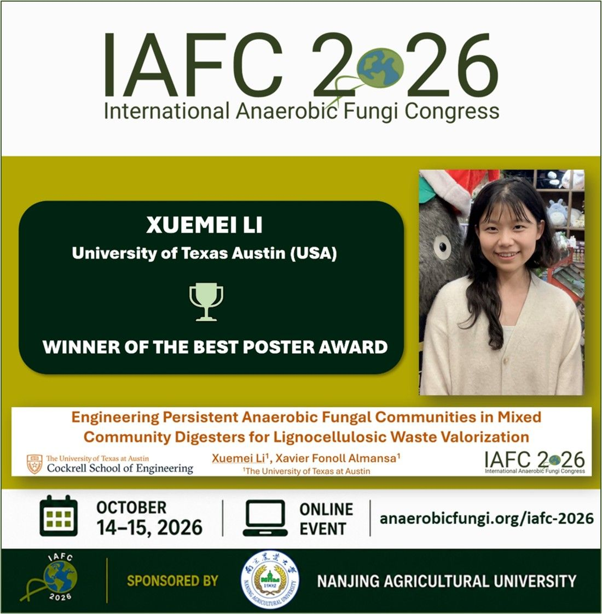
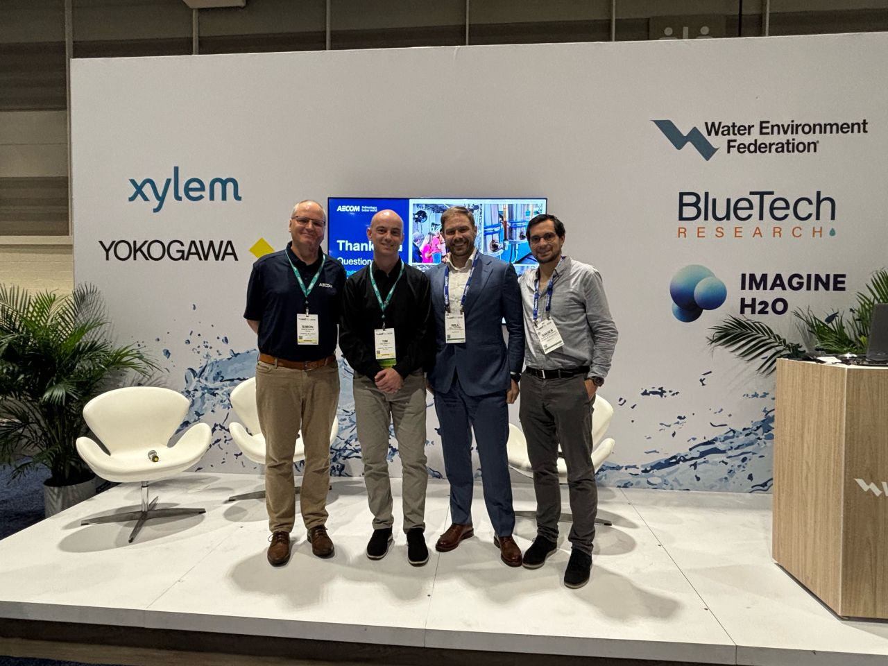
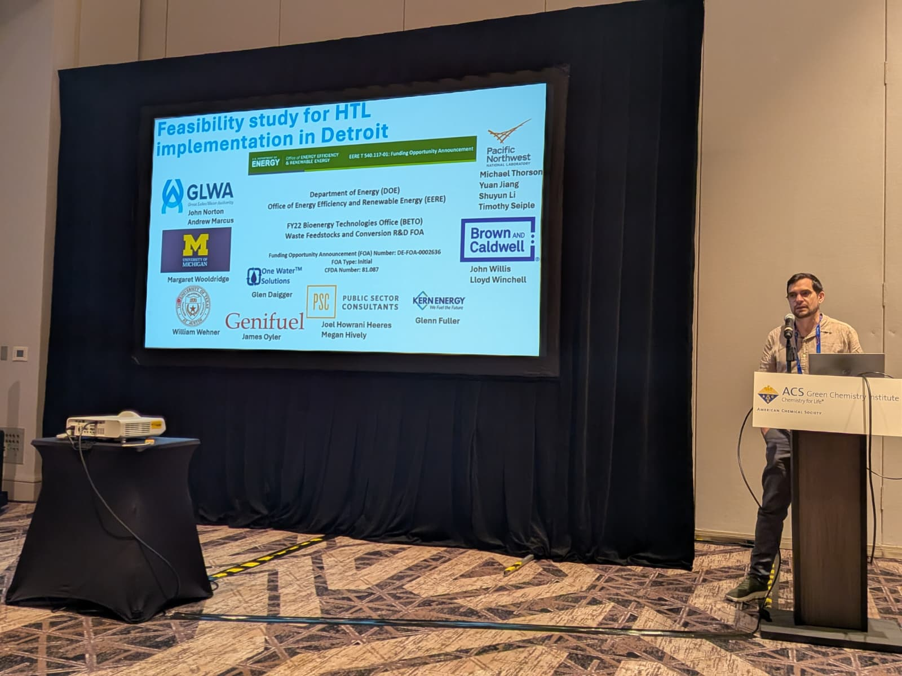
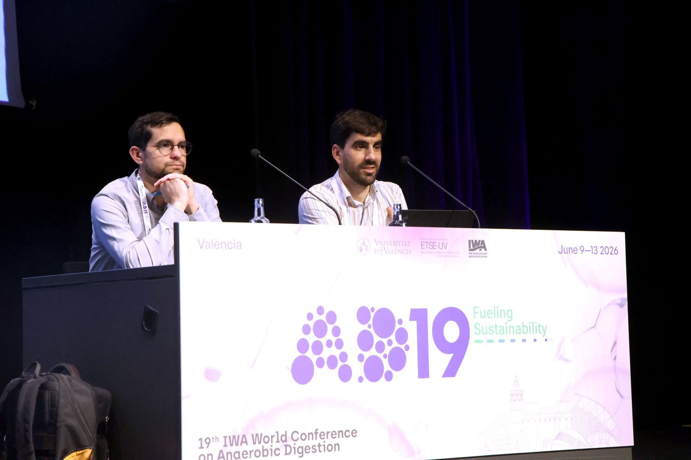

News & Activities

October 2026Poster at the International Anaerobic Fungi Congress (IAFC 2026)
Xuemei Li presented the poster "Engineering Persistent Anaerobic Fungal Communities in Mixed Community Digesters for Lignocellulosic Waste Valorization" at IAFC 2026.

September 2026WEFTEC 2026: Session on HTL Implementation at Wastewater Treatment Plants
The group organized a session at WEFTEC 2026 in New Orleans on two aspects of implementing hydrothermal liquefaction (HTL) at wastewater treatment plants: management of the HTL aqueous by-product and PFAS fate. During the session, Will Wehner presented his work on HTL aqueous phase (HTL-aq) treatment. In a separate session, Dr. Xavier Fonoll Almansa presented results from the DOE project on the feasibility of HTL implementation.

June 2026ACS Green Chemistry & Engineering Conference 2026
At the ACS Green Chemistry & Engineering Conference in San Antonio, TX, the group presented its work on hydrothermal liquefaction.

June 2026IWA World Conference on Anaerobic Digestion (AD19)
Dr. Fonoll Almansa attended the 19th IWA World Conference on Anaerobic Digestion in Valencia, Spain, where he presented Will Wehner's research in a poster.
 May 2026
May 2026
Residuals, Biosolids and Treatment Technology Conference
Dr. Xavier Fonoll Almansa gave a presentation on the fate of PFAS during continuous hydrothermal liquefaction at the WEF Residuals, Biosolids and Treatment Technology Conference in Kansas City, MO.
 2026
2026
Invited Speaker at the Eckenfelder Lecture Series
Dr. Fonoll Almansa was invited as a speaker in the Eckenfelder Lecture Series to talk about next-generation treatment options for biosolids.